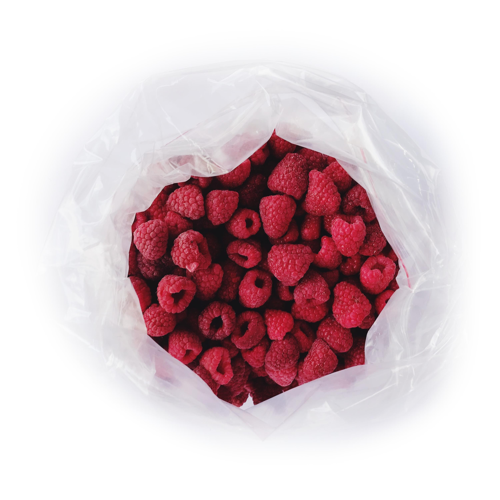

ТОВ «ВЕСТ БЕРІ»
WestBerry · заморозка та експорт ягід
Продукція
Асортимент
Заморожена та свіжа продукція
Лісові ягоди
- • Чорниця
- • Ожина
- • Бузина
- • Терен
- • Шипшина
Культивовані ягоди
- • Обліпиха
- • Малина
- • Суниця садова (полуниця)
- • Суниця альпійська
- • Червона смородина
- • Чорна смородина
Органічні ягоди
- • Чорниця
- • Ожина
- • Бузина
- • Шипшина
- • Терен
Свіжа продукція
Заготівля кореня хрону триває з вересня по грудень у екологічно чистих регіонах України. Перед зберіганням проводиться сортування та очищення.
Орієнтовний щорічний обсяг заготівлі — від 500 тонн.
Можливі індивідуальні замовлення на заготівлю та експорт.
Формати поставок
- • Цілі ягоди або нарізка
- • Фасування під ритейл або переробку
- • Партії під контракт
Фотогалерея
Приклади продукції

Заморожена чорниця (IQF).

Малина — швидка заморозка.

Полуниця — цільні ягоди.